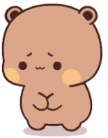
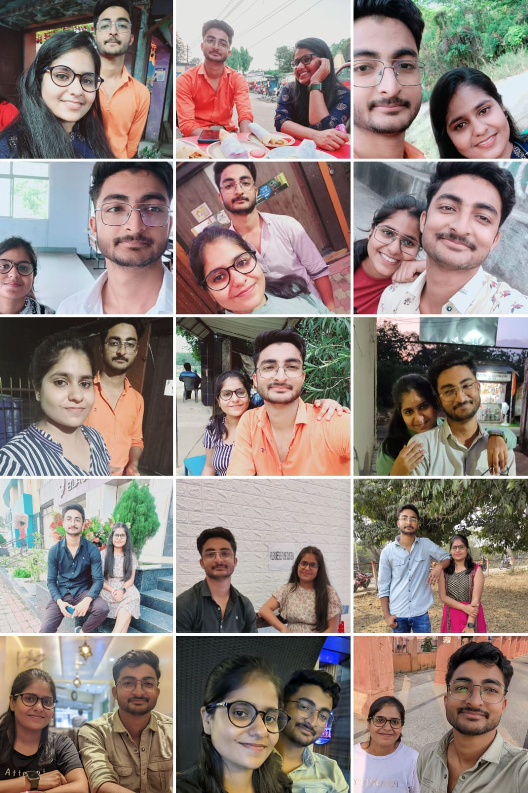
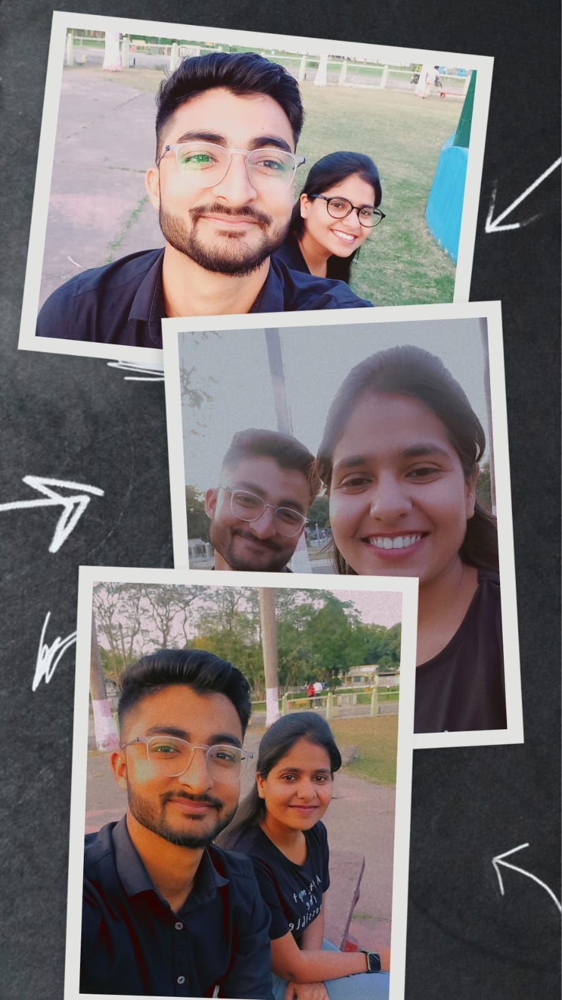
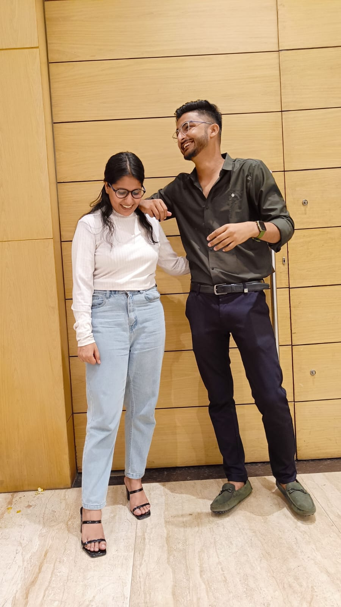
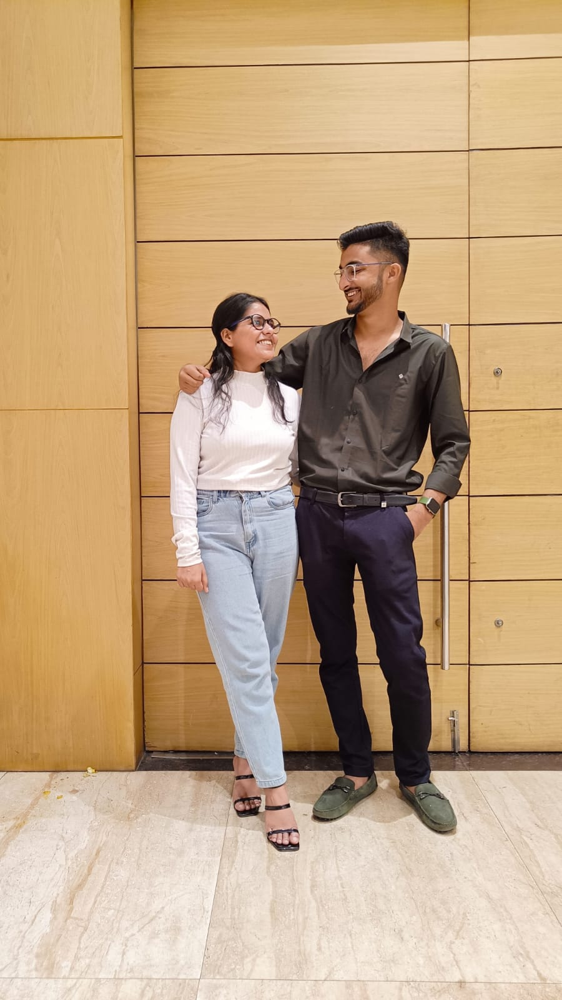

SORRY BESTIIIEEE...
Hey besttiiieee...
Let's go back into the memories of beautiful friendship of one girl and a boy. So the girl name was Swati and the boy name was Armaan. Now you will be thinking that this is us. That's perfectky correct it's the memory of our beautiful friendship. Yes the friendship of Armaan and Swati
So let's begin....
2 years ago we met and sab kuch kitna acha tha bht acha hmara dostii khairr uss waqt tmhare side se utna acha ny tha bt phr v acha tha.
See how happy we were 💗
Hmlg ka dostii dheere dheere or acha hote gya bich me kuch hua jisse sab bigr gya and I thought that itna hi tha jo tha hm bht bharosha krte the ki kitna v ho armaan hmse kv rude nd serious wala strict ny hoga bht ghamand tha iss baat ka bt wo ghamand tm tod diye the mera jb tm aisa kiye uss waqt. Khairr choro jane do ye ladai se mujhe or khushi hua bcz ye ladai ke baad jb hmlg ka solve hua toh hmara frndship or gehra ho gya or v jada mst itna ki understanding kaafi bdh gya nd dono ke mind me set h ki kitna v lad le extreme kv koi ny krega at the moment gussa me kuch v bol dege bt thode derr baad sab shant and normal. Thoda mujhe wo bharosha gain krne me tym lga ki tm sach me ab xtreme me v kuch khrb ny kroge bt dheere dheere wo trust v tm gain kr liye and I trust you ki tm kv mera xtreme gussa me v waoas se waisa ny kroge. That's why thida over gussa dikha dete h uske liye maaf krna bt kv waisa serious ny hota.
Hmara dostii kaafi acha chl rha tha bht sahi bht khush the hmlog and hmlog kaafi close v ho gye the then suddenly once again something happened from my side.
Iss baar hm khrb kiye tmhare saath🙂. Sorryy bestiiieeee... tmko bht hurt kiye h hm bht jada jante hue v ki mera dost hurt hota hoga uske baad v wo kaam kiye🙂.
Mere liye tm kitna kuch kiye hmesha mere padhai pe dhyan diye mujhe motivate kiye hm kitne demotivated the nd hare hue the strting me tm uss phase me mujhe motivate kiye mujhe push kiye or itna care krte ho mera hmesha hmko priority diye kitna dhyan rkhte the and itna support kiye always nd hm ye sab chiz bhulkr temporary khushi se attract ho gye nd tmse durr ja rhe the 🙂.
Mere pass heera jaisa dostii hai wo chiz chorkr kaha bronze wala khushi pass attract ho rhe the sorryy dost. Hm itne bewkkoof h yaar hm jo itne bade overthinker h wo hm tmhara condition smjhkr jaankr v tmhare liye kitna hurtful situation bna rhe the🙂 kitna andar se tootkr tm sirf mere khushi ke liye answer dete the🙂🙂 sorryy bestiiiieee sorryy mera bachaaa🙂 bht hurtful situation create kr rhe the apne dost ke liye jo mere liye itna krta tha uske liye itna hurtful scene... sorryy maaf kr do.
Bt hmlog ka dostii itna strong tha or itna acha tha bhagwan v ny chahe alag krwana wo kisi na kisi bahane hm dono ko wapas ek saath milwa diye bhale wo thik hone ka reason acha ny tha hm tb v khrb kiye tmhare saath bcz udhr se kuch khrb hua tb hm tmhare pass aa gye bt koi ny hm bhatak gye the toh krishna ji mujhe kisi bahane mera akal toh khulwaye ki kon shi kon glt nd kya shi nd kya glt nd at the end we are together again with more strong bond💗💗💗💗.
Sorryy dost mujhe maaf kro hmko pta h hm jo glti kiye uske liye sorry v km bcz hm chota mota hurt ny bht bada hurt kiye jisme u were having fear of losing me🙂.
But tm mujhe har chiz ke liye blame kro hm seh lege nd sunn lege bt ye ny bolna mera ansu jutha tha i was also having fear of losing you hm ny chahte the mera dost hmse durr ho ya dostii km ho ya mera dost hurt ho hm isliye rote the bcz mera dost hurt ho rha mera action se nd wo hurt hm krwa rhe🙂🙂 mera ansu jutha ny tha mera action jutha ho sakta h temporary khusi me hm attract hokr glt krte the bt mera mera tmhare samne ansu kv jutha ny tha🙂.
Hm promise krte h apna itna acha dostii pe ki hm kv nhi bharosha todege tmhara kv ny u can trust me once again dost. I will always be there for you in ur goods and bads🙂. Hm hmesha honge and hmlg ka dostii ka ek example diya jayega ki dostii ho toh inlog jaisa koi v aa jaye 3rd alag ny kr paya koi dono ko itna strong💗.
I promise I will never break ur trust again🙂.
I will be with you like this always 💗
Nd mujhe ek or chiz ke liye sorry bolna h for bhang, Hm bhang ny peete bt yaar isme hm totally wo bachpana wala glti bolege khud ka ki dekha dekhi me tej bnne ke liye pee liye. Like mummy papa kaise bharosha se mana mrte h thn also gti kr deta h bacha environment dekhkr same tm v mujhe bht mana kiye bht phr v hm🙂🙂🙂 wo glti kiye uske liye sorryy yaar isme hm kya bole isme hm sach me bachpana wala glti kr diye maaf kr do🙂🙂🙂 I promise you kv dubara ny hoga never ever kv ny. Tmhari dostt se glti hua maaf kr do🙂🙂🙂🙂🙂 ab kv ny higa I promise nd ye promise fake ny h ekdum ny hm serious h.
And sorryy once again dear bestiiieee really sorryyy for hurting you🙂🙂🙂💗💗💗💗.
Some lines for u my dear bestiieee💗..
I will there for the highs and lows
Give you mine if your heart gets broke
By your side when you are all alone
I will he there
When you are down down on your luck
Things got tough and you had enough
When you fall down I'mma pick you up
I will be there
Be with me like this always 💗
Dostii paki ho toh ladai jaruri h
Kyuki kehte hai na
Wo chai hi kya jisme ubal na ho
Aur wo dostii hi kya jisme bawal na ho..!
I Hate You ♡
I hate you for making my standards high & for giving me more than I ever deserved.I hate you for being so nice to me when I'm not worthy.
I hate you for understanding me even when I don't want anyone to know how I'm feeling.
I hate you because you've encouraged me to do things I was always hesitant to do.
I hate you because you make me feel so lonely without you, but most of all, I hate that I can't hate
a letter to my bestfriend:
Our connection has grown beyond anything I could have ever imagined. I've never felt this close to anyone before. I love how open we are with each other, I can't remember a time when I've laughed so hard with someone like I do with you. I'm so ridiculously excited to experience more life with you. I will never leave your side. I'm always gonna be there for you, even on those rough days. You can count on me, no doubt. Thank you for showing me what true friendship is. Thank you for sticking by me when things get tough. Thank you for being the most incredible person on this planet. You're amazing." I didn't want to call you while I was drowning I didn't want to pull you down with me" I said "I'll hold your hand no matter the depth" best friends
Hayee.. kv najar na lage to our beautiful bond💗💗💗💗
Did You Accept My Apology?
Did You Trust Me Again And Has Forgived Me?